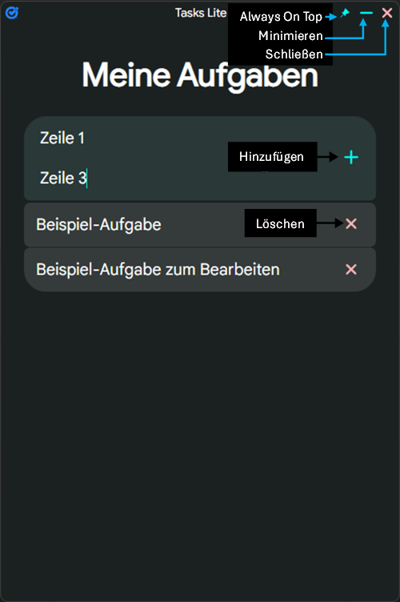

- Klicke unten auf Herunterladen.
- Gehe zum Download-Ordner deines Browsers.
- Suche "Tasks Lite.zip"
- Mache einen Rechtsklich auf die ZIP-Datei.
- Gehe auf Entpacken.
- Wähle einen Ort, wo du die App haben möchtest und drücke Enter.
- Gehe im Speicherort auf Tasks Lite > Tasks Lite > Tasks Lite.exe (Doppelklicks).
Tasks Lite herunterladen
Anleitung
Blick in die App


Wenn die App auch im Start-Reiter sein soll...
-
Pfad für Windows: C:\ProgramData\Microsoft\Windows\Start Menu\Programs
Pfad für MacOS: /Applications